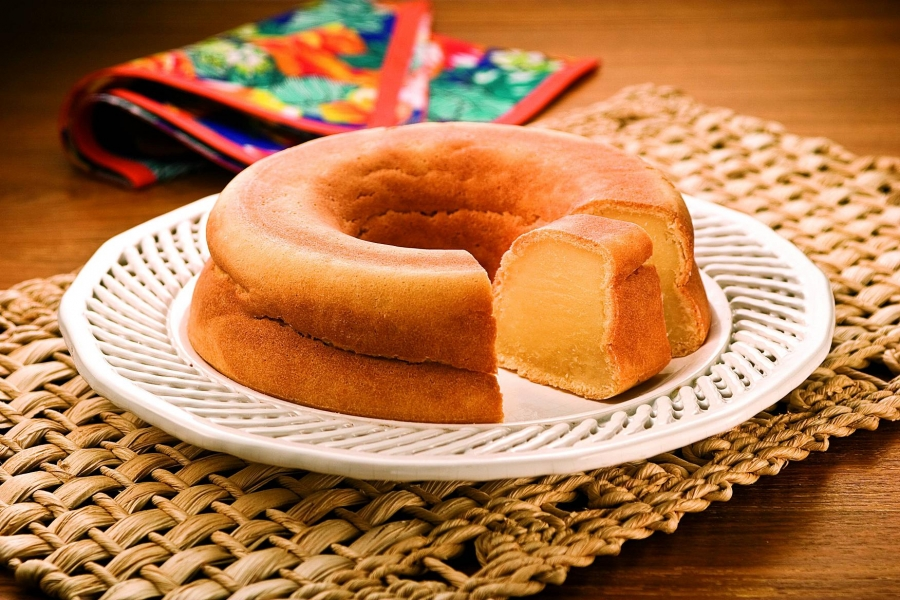

Sweet Potato Cake

Fluffy, delicious and creamy sweet potato cake
Sweet potato cake is one traditional cake from Northeast of Brazil, it is creamy, fluffy and it is part of the traditional culinary.
This special recipe is made with fresh products such as sweet potato, milk, coconut milk, and eggs, and all this ingredients bring a special flavour to the recipe. It is practical, fast and everyone should try.
Ingredients:
- 3 tablespoons butter
- 3 eggs
- 1 cup sugar
- 300ml milk
- 200ml coconut milk
- 2 cups all purpose flour
- 3 sweet potato (white)
- Pinch of salt
Directions:
- Preheat the oven to 210C.
- Grease and flour a medium-size bundt pan.
- Heat a pan in a medium heart, and add sweet potato with enough water to cover.
- Boil the sweet potatoes until it is cooked, but not too soft. Drain out all of the water and let the sweet potatoes cool down.
- Pill, mash the sweet potatoes and add to a bowl.
- Add the eggs, coconut milk, milk, butter, sugar and salt to a blender or mixer, and mix it for around 2 to 3 minutes.
- Add sweet potato, and mix it for 2 to 3 minutes. Add flour and mix it again.
- Pour into a lined baking dish and bake at 200°C for 40 minutes or until golden brown.
- Let stand until it is warm. Unmold the cake, and cut in square format. It is ready to serve.